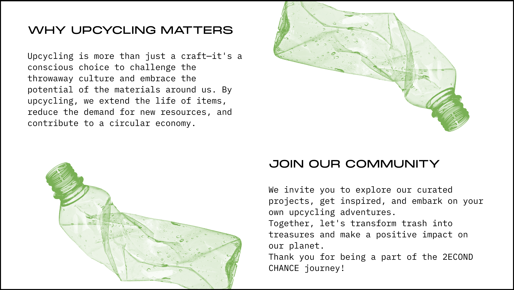

2ECOND CHANCE
[Branding, visual identity, website design, motion graphics]
2ECOND CHANCE is a website that reimagines discarded found items, transforming them
from perceived waste into objects of renewed value. The project challenges conventional
consumer culture and highlights the creative potential of upcycling and breathe new life
into forgotten possessions.
Mimicking an online shopping interface, visitors are allowed to browse through items as if they were for sale, prompting reflection on the paradox of purchasing what was once considered disposable. In keeping with the project’s environmental focus, the items are not actually available for purchase. Each reimagined piece not only gains a renewed function but also serves as a commentary on waste reduction and the meaningful connections that can be forged with the objects in our lives.
Mimicking an online shopping interface, visitors are allowed to browse through items as if they were for sale, prompting reflection on the paradox of purchasing what was once considered disposable. In keeping with the project’s environmental focus, the items are not actually available for purchase. Each reimagined piece not only gains a renewed function but also serves as a commentary on waste reduction and the meaningful connections that can be forged with the objects in our lives.


